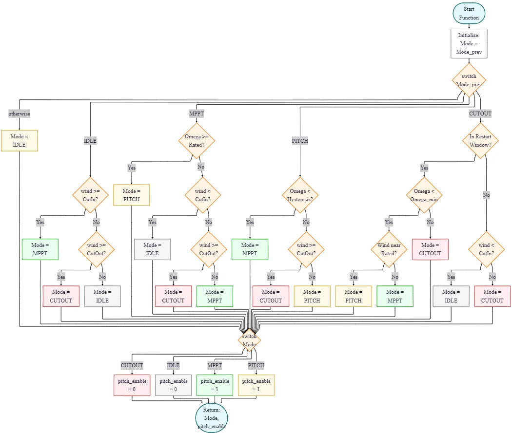
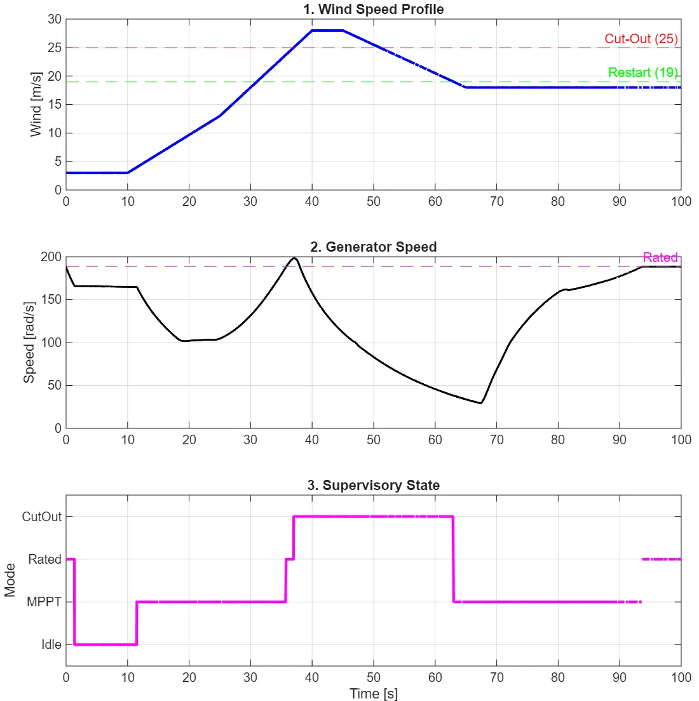
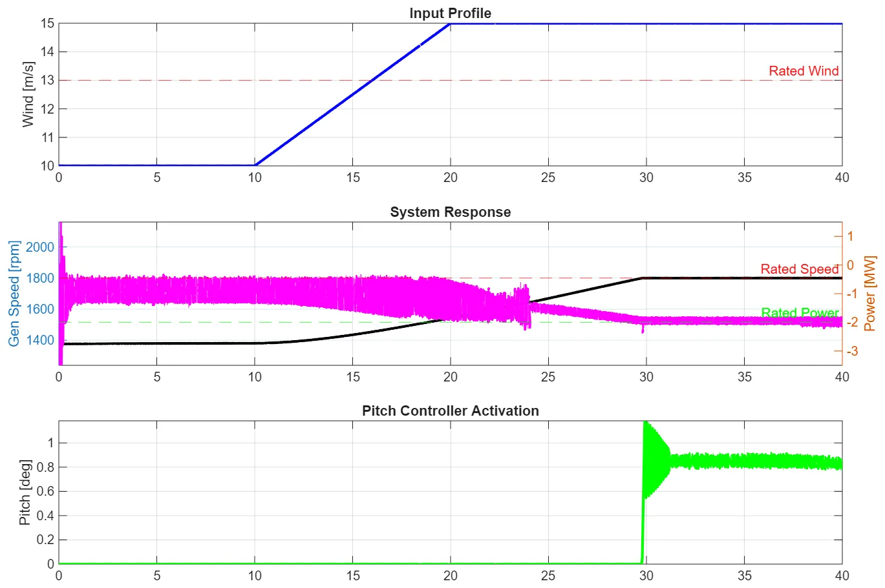

École Centrale de Nantes · group project
2 MW DFIG wind turbine: supervisory control
In a group project modelling a grid-connected, back-to-back DFIG wind energy conversion system, I designed the supervisory controller: a finite state machine that decides when the turbine idles, tracks maximum power, limits power with the pitch, or shuts down in a storm.
- Role
- Group project of five; my part was the supervisory controller
- Turbine
- 2 MW DFIG, rated generator speed 1800 rpm
- Regions
- Idle, soft start, MPPT, power limiting, safety cut-out
- Control laws
- MPPT torque T = Kopt·Ω², pitch PI with clamping anti-windup, start-up pitch schedule
- When
- Dec 2025
- Rated generator speed: the transition from MPPT to rated power
- 1800 rpm
- Return threshold to MPPT, 0.88 × rated: the hysteresis that stops chattering
- 1584 rpm
- Cut-out wind speed; restart only below 19 m/s and once the rotor has slowed
- 25 m/s
- Rated power held by the pitch controller above rated wind
- 2 MW

Results
- MPPT. After the soft start, the generator torque follows the optimal KoptΩ² curve.
- Rated power. Above rated wind the pitch controller holds the generator at 1800 rpm and the power at 2 MW.
- Cut-out and restart. When the wind drops back below 25 m/s the turbine does not restart at once: it waits until the wind is below 19 m/s and the rotor has slowed to a safe speed.
- Hand-off. A 0.965 derating on Kopt made the turbine reliably reach rated speed for the hand-over to the pitch controller.


What I took from it
- Hysteresis prevents chattering. Entering rated power at 1800 rpm but returning to MPPT only below 1584 rpm keeps turbulence from flipping the state back and forth.
- A clean hand-off needs a margin. In theory Kopt meets the rated point exactly; in practice a small derating was needed so the turbine reached rated speed despite model uncertainty.
- Parts that work alone may not work together. Each component was verified on its own, but the integrated model did not behave as expected, and with everything coupled the source was hard to find.
Scope
Group project. The supervisory controller was verified on the model without the grid-side converter; the group's fully integrated model did not perform as expected, although each component worked on its own.